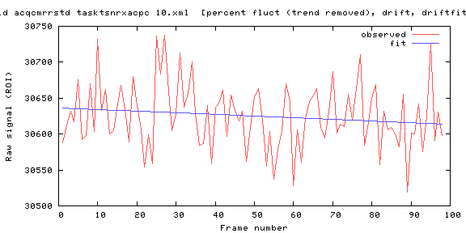
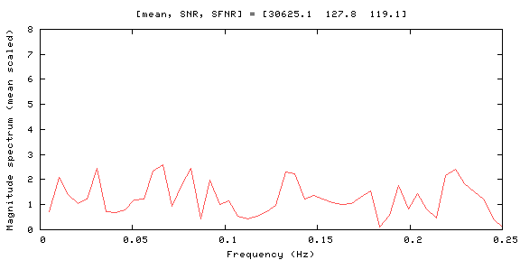
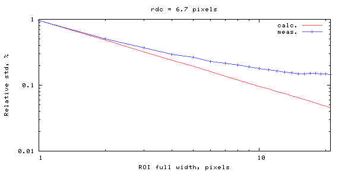
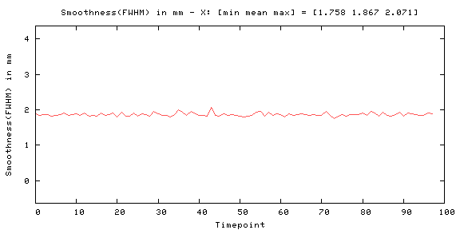
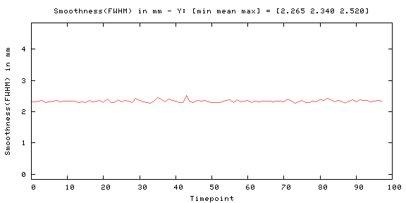
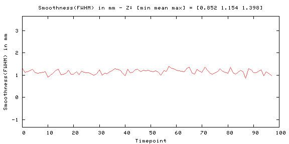
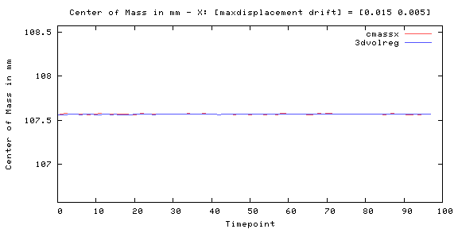
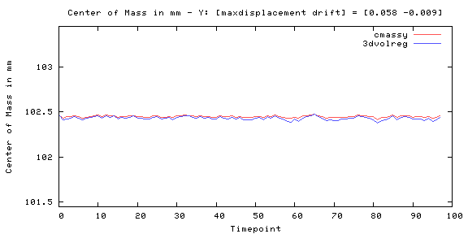
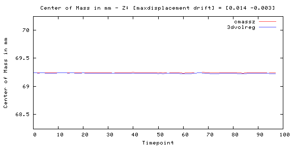
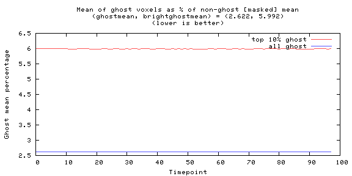
Odd-even difference image
| -7475 | 7898 |
| image min: -7475, image max: 7898 |
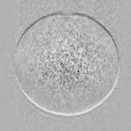 |
Mean image
| 0 | 44448.8 |
|
|
|
| image min: 0, image max: 44448.8 |
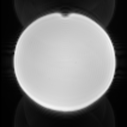 |
Standard Deviation image
| 0 | 335.303 |

|
|
| image min: 0, image max: 335.303 |
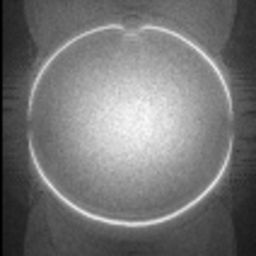 |
SFNR image
| 0 | 823.933 |
| image min: 0, image max: 823.933 |
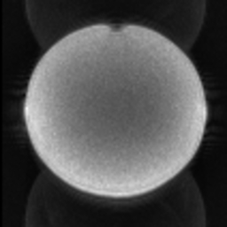 |
Acquisition parameters
| dimensions | 106x106x69x100 |
| spacing | 2mmx2mmx2mmx2000ms |
| gap | 0mmx0mmx0mmx0ms |
| scanner | AWP213018 |
| psdname | |
| examnumber | ed56c539-fae8-4f |
| studyid | Stability_20260420 |
| seriesnumber | 10 |
| runnumber | 1 |
| magneticfield | 3 |
| description | ses-64ch_func-bold_acq-cmrrstd_task-tsnrxacpc |
| scandate | 2026-04-20 |
| scantime | 09:51:18 |
| tr | 2000 |
| te | 30 |
| operator | |
| flipangle | 79 |
| prescribedslicespacing | 2 |
| frequencydirection | 1 |
| receivecoilname | HeadNeck_64_CS |
| transmitcoilname | Body |
| institution | THE UNIVERSITY OF PENNSYLVANIA |
| examdescription | ACTIVE KIRWAN |
| scanner | AWP213018 |
| scannermanufacturer | Siemens Healthineers |
| scannermodelname | MAGNETOM Cima.X |
| protocolname | ses-64ch_func-bold_acq-cmrrstd_task-tsnrxacpc |
| institutionaddress | Grays Ferry Ave. BLDG 250 STE 140 3401,Philadelphia,69 - KEYSTONE,US,19146 |
| institutionaldepartmentname | MindCORE Neuroimaging Suite 140 |
| acquisitiondatetime | 20260420095116.712500 |
| frametype | ORIGINAL |
| pixelpresentation | MONOCHROME |
| volumetricproperties | DISTORTED |
| volumebasedcalculationtechnique | NONE |
| compleximagecomponent | MAGNITUDE |
| acquisitioncontrast | UNKNOWN |
| mracquisitiontype | 2D |
| numaverages | 1 |
| spacingbetweenslices | 2 |
| echotrainlength | 80 |
| percentsampling | 100 |
| percentphasefieldofview | 100 |
| scannerserialnumber | 213018 |
| softwareversions | syngo MR XA61 |
| inplanephaseencodingdirection | COLUMN |
| variableflipangleflag | N |
| contentqualification | RESEARCH |
| acquisitionduration | 217.89500000000001 |
| resonantnucleus | 1H |
| applicablesafetystandardagency | IEC |
| acquisitionnumber | 1 |
| instancenumber | 1 |
| numtemporalpositions | 100 |
| imagecomments | Not for diagnostic use, Unaliased MB3/PE3/LB |
| samplesperpixel | 1 |
| photometricinterpretation | MONOCHROME2 |
| numberofframes | 69 |
| rows | 106 |
| columns | 106 |
| bitsallocated | 16 |
| bitsstored | 16 |
| highbit | 15 |
| lossyimagecompression | 00 |